Теорію з цієї статті можна одразу перевірити в інтерактивній моделі: 38 чинників, ріст корінців, віртуальний мікроскоп, підрахунок клітин і χ².
Відкрити модель01Що таке Allium cepa тест
Ідея методу
Allium cepa тест — біотест (оцінка дії речовини за реакцією живого організму) на кінчиках адвентивних (придаткових, що відростають від денця цибулини) корінців цибулі городньої. Його вважають «золотим стандартом» первинного скринінгу генотоксичності (здатності пошкоджувати ДНК і хромосоми), цитотоксичності (здатності пригнічувати поділ і ріст клітин) та мутагенності (здатності спричиняти спадкові зміни) in vivo — на живому організмі, а не в пробірці.
Очищені цибулини ставлять так, щоб у розчин занурювалось лише денце. Клітини меристеми (твірної тканини, що безперервно ділиться) безпосередньо контактують з розчином речовини, природною водою, ґрунтовою витяжкою чи мікробним фільтратом. Тест одночасно реєструє три рівні відповіді:
- макроскопічний — фітотоксичність (шкідлива дія на рослину): гальмування росту корінців, гачки, потовщення, побуріння;
- клітинно-кінетичний — зміна мітотичного індексу (частки клітин, що діляться) та розподілу клітин за фазами мітозу;
- цитогенетичний — хромосомні аберації (структурні й числові порушення хромосом), мікроядра і ядерні аномалії.
Результати тесту збігаються з цитогенетичними тестами на ссавцях на 82–91,5 % (Grant, 1982; Torres-Bugarín et al., 2026), тому його рекомендують ВООЗ (WHO), Програма ООН з довкілля (UNEP), Міжнародна програма з хімічної безпеки (IPCS) та Агентство з охорони довкілля США (US EPA). Тест відповідає біоетичному принципу 3R (Replacement, Reduction, Refinement — заміна, скорочення й удосконалення досліджень на хребетних тваринах).

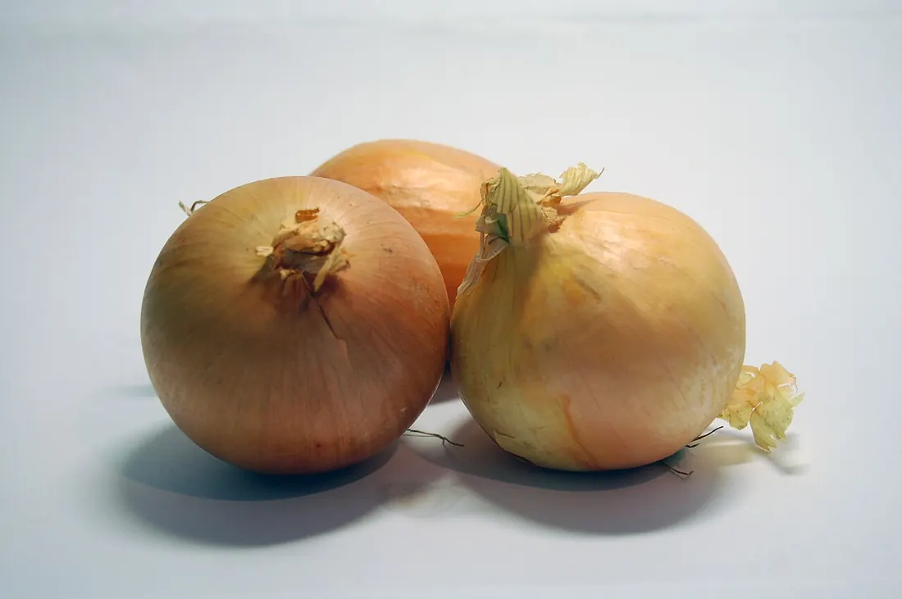

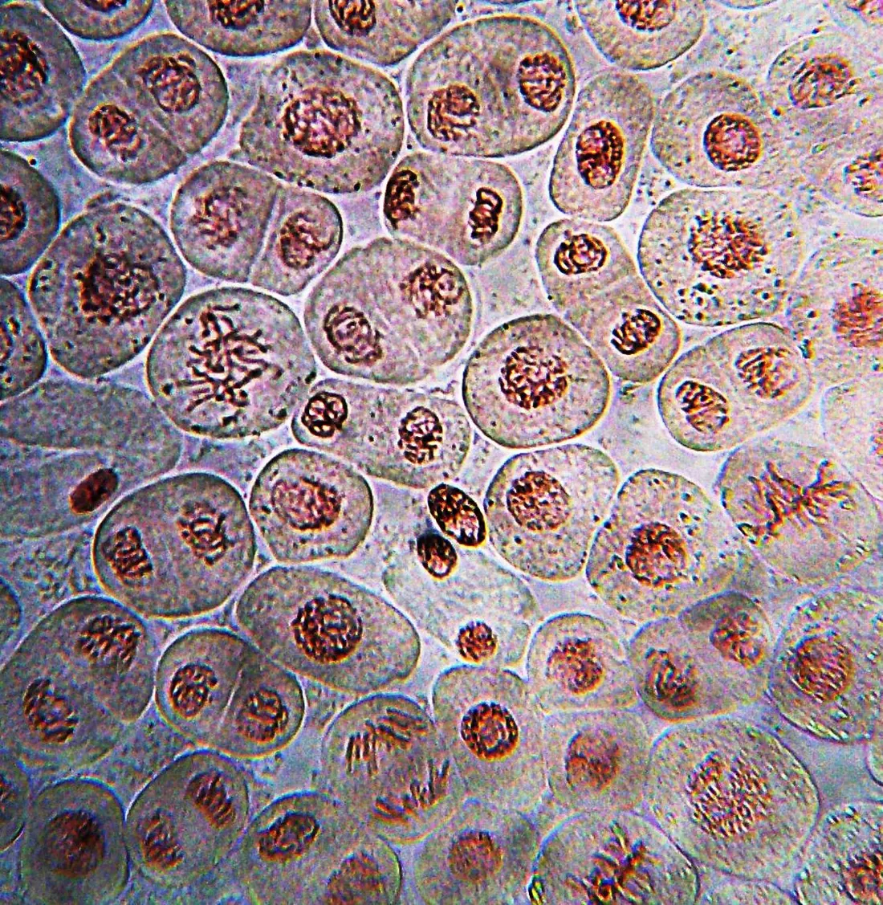
Історія методу
- 1938 — шведський цитогенетик Альберт Леван описав дію колхіцину (алкалоїду безвременника) на мітози в корінцях цибулі: веретено поділу руйнується, клітини зупиняються в метафазі (К-мітоз, від «колхіциновий мітоз»).
- 1949–1951 — Леван і Естергрен поділили мутагени на «веретенні отрути» (порушують веретено поділу) та «хромосомні отрути» (рвуть хромосоми).
- 1982 — Вільям Грант у програмі US EPA Gene-Tox підтвердив надійність тесту на сотнях сполук.
- 1985 — Гунвор Фіскешьо запропонувала стандартний протокол для екомоніторингу (EC50 за ростом корінців + мікроскопія).
- 1994 — Ранк і Нільсен обґрунтували анафазо-телофазний тест — облік аберацій лише в анафазах і телофазах.
- 1995 — Ма зі співавторами стандартизували мікроядерний тест на кінчиках корінців.
- 2009 — Леме й Марін-Моралес систематизували кластогенні й анеугенні механізми та ядерні аномалії.
- 2018–2026 — гармонізація протоколів для наночастинок, рослинних екстрактів, біопестицидів; поєднання з методом ДНК-комет і штучним інтелектом (Bonciu et al., 2018; Nicuță et al., 2025; Torres-Bugarín et al., 2026).
У моделі можна поставити той самий дослід: контроль, серію розведень і підрахунок клітин під мікроскопом.
Відкрити модель02Цибуля як тест-об’єкт
Систематичне положення
Цибуля городня (Allium cepa L.; «L.» — скорочення прізвища Ліннея, який описав вид у 1753 р.) належить до родини Амарилісові (Amaryllidaceae), підродини Цибулеві (Allioideae), порядку Холодкоцвіті (Asparagales), класу Однодольні. Її вирощують у понад 170 країнах, тож матеріал для тесту доступний цілий рік. Усі сорти — жовті, білі, червоні, шалот — мають однаковий набір хромосом 2n = 16 і однакову будову меристеми.
Цибулина і корінці
Цибулина — видозмінений вкорочений підземний пагін. Її основа — сплощене стебло, денце, на якому сидять соковиті луски (запас води, цукрів, фруктанів) і сухі захисні луски. По краю денця лежить кореневе кільце з примордіями (зачатками) корінців. У воді вони за 1–2 доби синхронно рушають у ріст, утворюючи мичкувату кореневу систему з десятків білих корінців.
Чотири зони кінчика корінця
- Кореневий чохлик (0–0,3 мм) — захисний ковпачок, що виділяє слиз; першим контактує з речовиною, але сам майже не ділиться, тому його відрізають.
- Меристема (0,3–2 мм) — головна робоча зона тесту. У центрі — центр спокою (група клітин, що діляться в 5–10 разів рідше і після отруєння відновлюють меристему). Клітини дрібні, ізодіаметричні (однакові в усіх напрямках), без великої вакуолі, з великим ядром — до 50–60 % об’єму клітини.
- Зона розтягування (2–5 мм) — клітини припиняють ділитися й видовжуються. Порушення тут дає макроскопічні ефекти: гальмування росту, гачки й потовщення (c-tumors) від колхіциноподібних речовин.
- Зона диференціації (понад 5 мм) — кореневі волоски й провідні тканини.
Біохімія і «зелена печінка»
Запасів цукрів і амінокислот у лусках вистачає меристемі на 5–7 діб на чистій воді. Цибуля багата на флавоноїди (кверцетин, кемпферол) і сіркоорганічні сполуки (S-алкілцистеїнсульфоксиди, з яких фермент алііназа утворює сльозоточиві речовини).
Клітини кінчика корінця мають власну систему знешкодження ксенобіотиків (чужорідних для організму сполук) — концепція «зеленої печінки»:
- Фаза I — активація: окиснення цитохромом P450 і пероксидазами. Так промутагени (речовини, що стають мутагенами лише після перетворення в клітині: бенз(а)пірен, афлатоксин B1) перетворюються на активні форми. Тому, на відміну від бактеріального тесту Еймса, не потрібна мікросомальна фракція печінки щурів (S9).
- Фаза II — кон’югація (приєднання) до глутатіону (GSH — трипептиду-антиоксиданту) або, для важких металів, до фітохелатинів (пептидів, що зв’язують метали).
- Фаза III — винесення комплексів у вакуолю чи клітинну стінку. Коли запас глутатіону вичерпується, активні форми кисню (АФК) і реакційноздатні молекули прориваються в ядро — з’являються аберації.

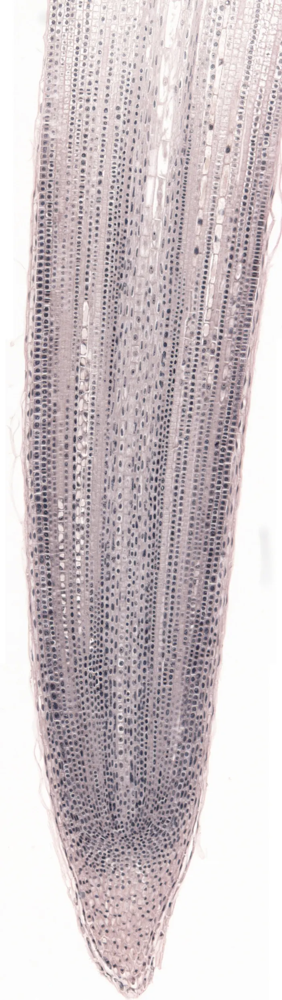

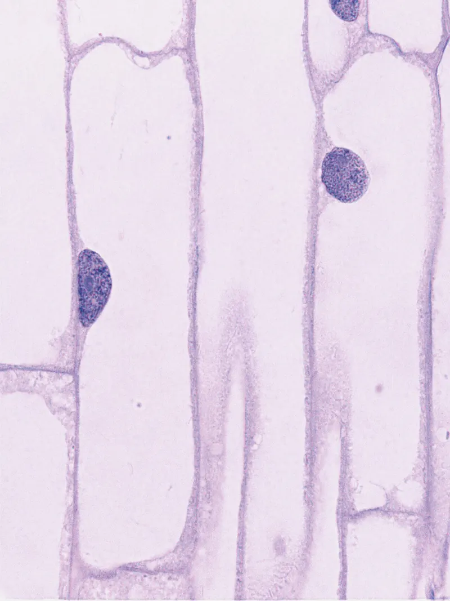

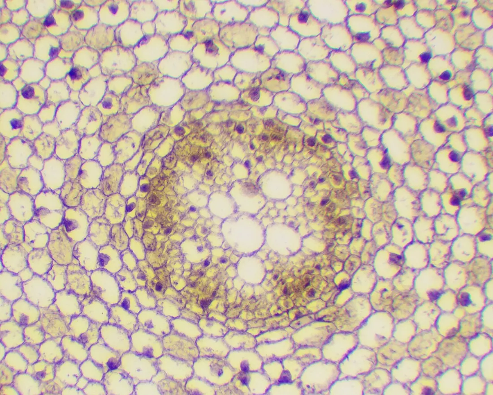
03Каріотип і клітинний цикл
Шістнадцять великих хромосом
Каріотип (набір хромосом клітини) цибулі — 2n = 16: вісім пар великих хромосом завдовжки 12,8–18,4 мкм (у багатьох рослин і гризунів — 1–3 мкм). Ядро містить ≈ 16 пг ДНК — уп’ятеро більше, ніж гаплоїдний геном людини. Великі розміри дозволяють у звичайний світловий мікроскоп при 400× і 1000× розрізнити найтонші мости, фрагменти, кільцеві хромосоми. Пара VI несе NOR (район ядерцевого організатора — ділянку генів рибосомної РНК, навколо якої збирається ядерце) і маленький «супутник».
Клітинний цикл
Клітинний цикл — життя клітини від поділу до поділу. У меристемі цибулі за 20–22 °C він триває ≈ 20 год. Інтерфаза (період між поділами) складається з G1 (ріст, синтез РНК і білків, 5–6 год), S (подвоєння ДНК, 6–8 год) і G2 (перевірка подвоєння, підготовка веретена, 3–4 год). Пошкодження ДНК у G1, якщо їх не відремонтовано до S, після подвоєння перетворюються на хромосомні аберації.
Мітоз (поділ ядра) триває ≈ 4 год. Мітотичний індекс контролю — 8–15 %, а спонтанних аберацій менше 0,1–0,5 %: «шум» малий, тож ефект будь-якого мутагену добре помітний.

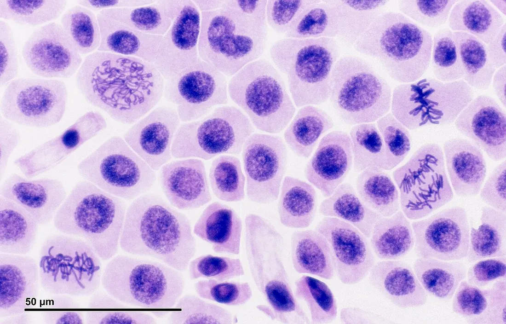

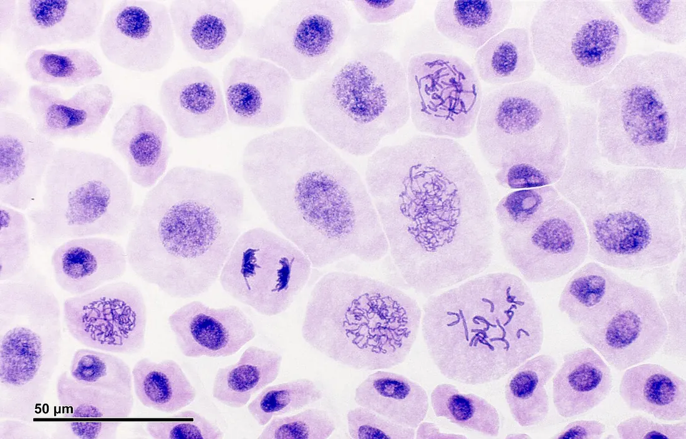

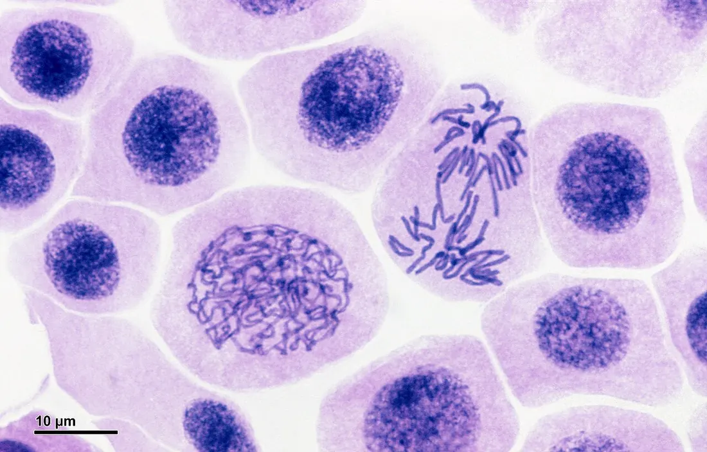

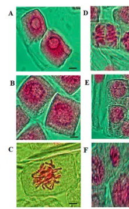
Чому результат на цибулі стосується людини
Основні мішені в клітинах рослин і тварин однакові: подвійна спіраль ДНК з гістонами, білок тубулін (з нього складаються мікротрубочки веретена поділу; у рослин і ссавців він подібний на 80–85 %), системи ремонту ДНК і контрольні точки циклу. Відмінності — клітинна стінка, веретено без центріолей і поділ цитоплазми фрагмопластом (системою мікротрубочок, що будує клітинну пластинку від центру до країв). Тому інгібітори фрагмопласта (кофеїн, деякі мікотоксини й гербіциди) у цибулі часто дають двоядерні клітини.
У моделі перемикайте фази на кінограмі поділу і порівнюйте фазові індекси P / M / A+T для різних речовин.
Відкрити модель04Чому аберації рахують в анафазі й телофазі
Чотири причини
- Хромосоми розведені. У профазі вони утворюють клубок (спірему), у метафазі — щільну пластинку, де 16 довгих хромосом накладаються. В анафазі сестринські хроматиди (половинки подвоєної хромосоми) розходяться до полюсів, і екватор звільняється: міст, фрагмент чи відстаюча хромосома видно на чистому тлі.
- Анафаза — «стрес-тест». Мікротрубочки тягнуть хромосоми за кінетохори (білкові комплекси на центромерах) із силою в десятки піконьютонів. Хромосома без центромери (ацентричний фрагмент) лишається на екваторі; хромосома з двома центромерами (дицентрик) натягується містком між полюсами; погано прикріплена відстає.
- Колхіцин не потрібен. Метафазний метод вимагає колхіцину для накопичення метафаз, а він сам — мітотична отрута. Анафазо-телофазний тест без нього фіксує і кластогенну (розриви), і анеугенну (порушення веретена) дію досліджуваної речовини.
- Телофаза показує наслідки. Міцні мости лишаються телофазними, фрагменти й відстаючі хромосоми обгортаються власною оболонкою і стають мікроядрами, а блок фрагмопласта дає двоядерні клітини.
Цикл «розрив — злиття — міст»
Коли кластоген (іонізуюче випромінювання, гідроксильні радикали, алкілуючі сполуки) рве обидва ланцюги ДНК або руйнує теломери (захисні кінці хромосом), утворюються «липкі» кінці. Система ремонту NHEJ (негомологічне з’єднання кінців) помилково зшиває їх — виникає дицентрична хромосома й ацентричний фрагмент. В анафазі дицентрик утворює міст, міст рветься, і цикл повторюється.
Контрольна точка веретена
Поки хоч один кінетохор не прикріплений правильно, діє контрольна точка збирання веретена (SAC — білки Mad1, Mad2, Bub1, BubR1, Bub3), що блокує перехід в анафазу. Коли всі 16 хромосом вишикувалися, фермент сепараза розрізає білкове кільце когезин, яке тримало хроматиди разом, і стартує анафаза. Деякі отрути (бензимідазоли, Hg²⁺, Pb²⁺, патулін) спричиняють меротелічне прикріплення (один кінетохор «тягнуть» обидва полюси) — SAC цього не помічає, і хромосома відстає. Мікроцистин-LR і пестициди розщеплюють полюси веретена — виникають мультиполярні анафази.
Подивіться в анімації, як міст утворюється і рветься, а фрагмент стає мікроядром.
Відкрити модель05Атлас аберацій
Усі порушення поділяють на три групи (Leme & Marin-Morales, 2009). Розмір мікроядер допомагає розрізнити групи: дрібні мікроядра — з фрагментів (кластогени), великі — з цілих хромосом (анеугени).
Кластогенні (структурні) аберації
Кластогени (від грец. klastos — «розбитий») безпосередньо рвуть ДНК або порушують її синтез і ремонт.
- Анафазні й телофазні мости — нитки хроматину між полюсами; виникають з дицентричних хромосом.
- Розриви й ацентричні фрагменти — шматки хромосом без центромери; лишаються на екваторі.
- Кільцеві хромосоми — два розриви в одній хромосомі, кінці зливаються в кільце.
- Дрібні мікроядра — з ацентричних фрагментів.

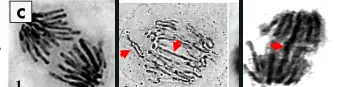

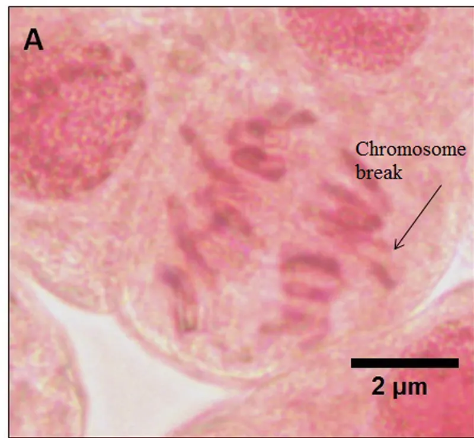

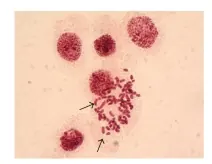

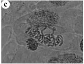
Анеугенні (числові) аберації
Анеугени (від «анеуплоїдія» — зміна числа хромосом) порушують веретено поділу: руйнують чи надмірно стабілізують мікротрубочки, ушкоджують кінетохори.
- К-мітоз — веретена немає, конденсовані X-подібні хромосоми розсипані по клітині; за повної дії утворюється одне велике тетраплоїдне ядро (4n = 32).
- Липкість хромосом — хромосоми злипаються в темну аморфну масу; за Фіскешьо — ознака незворотної, летальної токсичності.
- Відстаючі й блукаючі хромосоми — відстають від основної групи або, навпаки, випереджають її; призводять до анеуплоїдії 2n ± 1.
- Мультиполярні анафази — полюси веретена розщеплюються на 3–4, утворюються нежиттєздатні міні-ядра.

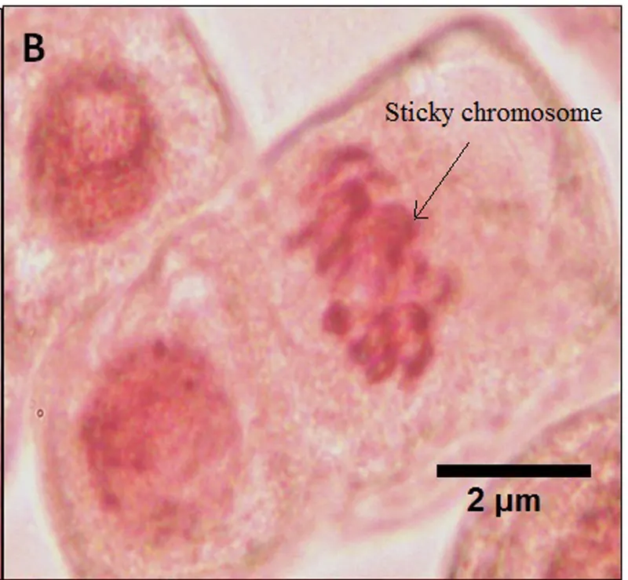

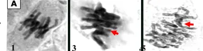

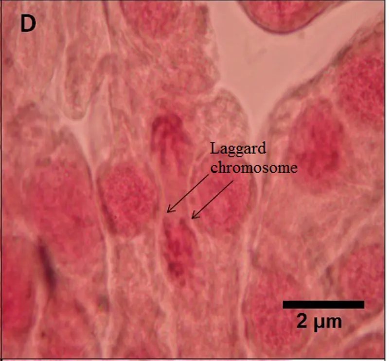

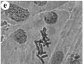

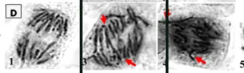

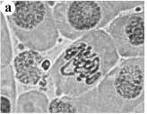
Ядерні аномалії інтерфази
- Мікроядра — маленькі окремі ядра з фрагментів або цілих хромосом, що не потрапили в дочірні ядра.
- Двоядерні й багатоядерні клітини — ядро поділилось, а клітинна пластинка не утворилась.
- Ядерні бруньки — випинання ядерної оболонки на ніжці: клітина виводить зайву або пошкоджену ДНК.
- Лопатеві ядра, гігантські й міні-клітини — наслідки мультиполярних поділів і подвоєння ДНК без поділу.
- Клітини-привиди, каріорексис, апоптотичні тільця — клітини з розпалим (каріорексис) або відсутнім ядром, уламки клітини в оболонці (апоптотичні тільця — наслідок апоптозу, запрограмованої загибелі клітини): термінальна стадія загибелі.

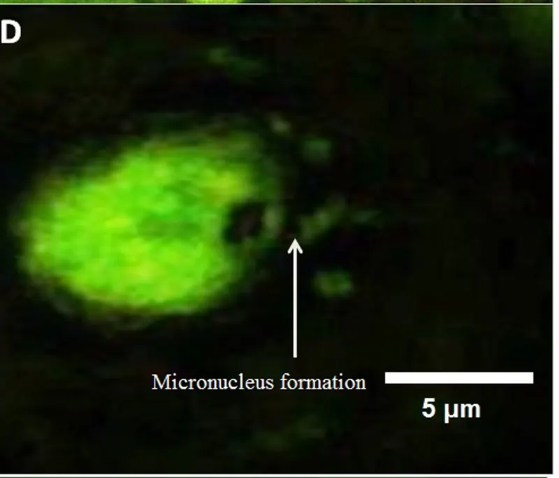

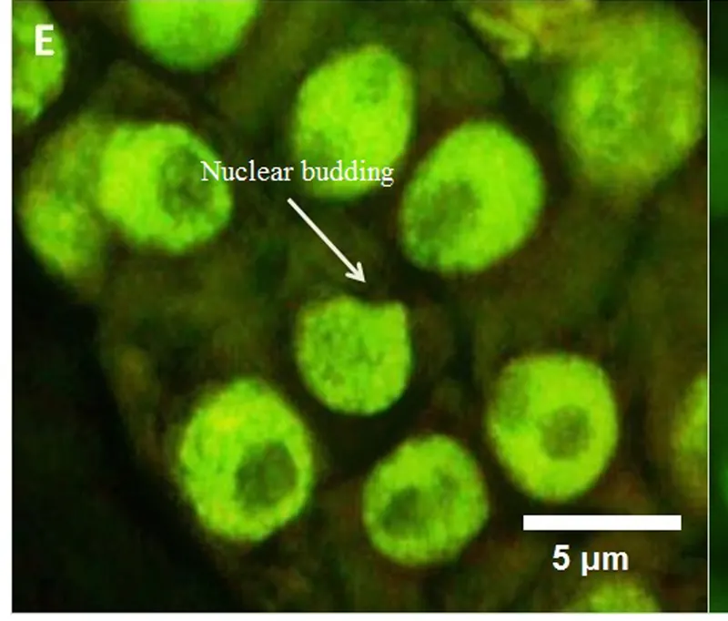

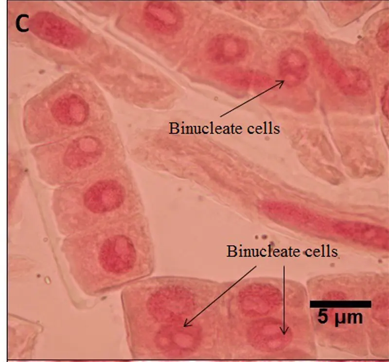

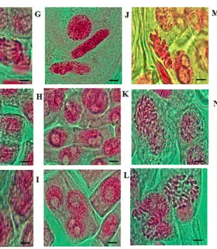

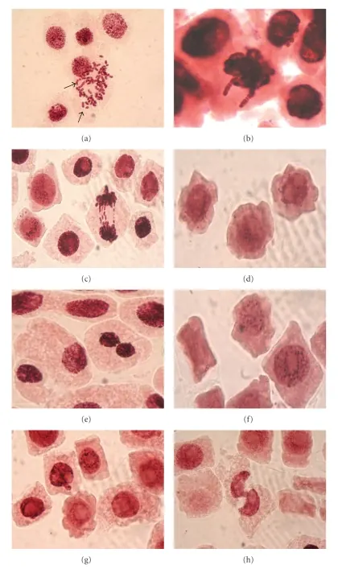

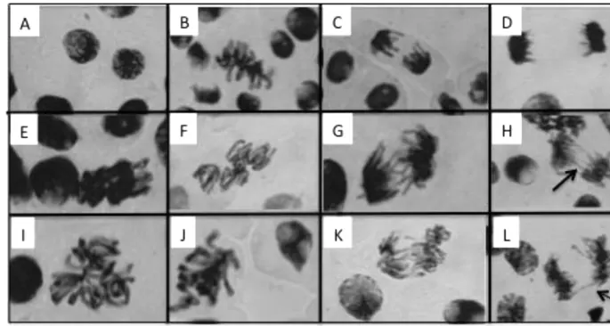
| Аберація | Фаза | Механізм | Наслідок для клітини |
|---|---|---|---|
| Мости | A, T | кластогенний або блок топоізомерази II | розриви ДНК, втрата теломер, цикл BFB |
| Фрагменти й розриви | M, A, T | кластогенний | дрібні мікроядра |
| К-мітоз | M | анеугенний (веретенна отрута) | поліплоїдні (4n) ядра, зворотний за малих доз |
| Липкість | P, M, A | фізіологічно-токсичний | незворотний, летальний ефект |
| Відстаючі й блукаючі | M, A, T | анеугенний | анеуплоїдія 2n ± 1, великі мікроядра |
| Мультиполярність | A, T | анеугенний (дезорганізація полюсів) | нежиттєздатні гіпоплоїдні клітини |
| Двоядерні клітини | пізня T, I | цитокінетичний блок | порушення фрагмопласта |
| Ядерні бруньки | I | геномна нестабільність | виведення ампліфікованої ДНК |
Увімкніть «Позначити аберації» на віртуальному препараті, торкніться клітини — і порівняйте зі справжнім фото.
Відкрити модель06Протокол досліду
Підготовка цибулин
- Калібрування. Здорові щільні цибулини однакового розміру (1,5–2,5 см, 3–5 г), не оброблені інгібіторами проростання (малеїновим гідразидом) чи фунгіцидами.
- Скарифікація денця. Знімають сухі луски й старі корінці, обережно зішкрібають тонкий шар на денці, щоб звільнити зачатки корінців, не ушкодивши твірну тканину.
- Повторності. На кожну концентрацію і контроль — 3–6 цибулин; висаджують із запасом (5–12) і відбирають найоднорідніші.
Три схеми експозиції
- Схема А — спершу пророщення у воді 24–72 год при 22 ± 2 °C у темряві (корінці 0,5–2 см), потім перенесення в розчини на 24–72 год. Для дуже токсичних речовин.
- Схема Б (за Фіскешьо) — цибулини одразу ставлять на серію розведень: 48–72 год для MI й аберацій, 72–96 год для EC50 за ростом корінців.
- Схема В — імпульсна обробка 1–48 год, потім 24–72 год у чистій воді (період відновлення). Показує, чи ефект зворотний, і як фрагменти першого мітозу перетворюються на мікроядра.
Солі металів готують розведеннями від 10⁻⁶ до 10⁻² М за pH 5,5–7,5. Погано розчинні речовини розчиняють у ДМСО (диметилсульфоксиді, не більше 0,1–0,5 %) чи етанолі й додають контроль розчинника. Суспензії наночастинок обробляють ультразвуком і оновлюють щодоби. Ґрунти тестують у водних витяжках 1:4–1:10, екстракти — після фільтрування через 0,22–0,45 мкм.
Негативний і позитивний контролі
Негативний контроль — дехлорована водопровідна чи джерельна вода. Дистильована вода без Ca²⁺ і Mg²⁺ (потрібних мембранам і пектатам стінки) може сама знизити MI.
Позитивний контроль — речовина з відомою дією: метилметансульфонат (MMS, 10 мкг/мл, алкілуючий кластоген), етилметансульфонат (EMS), колхіцин (0,05 %, анеуген), малеїновий гідразид, гліфосат, сульфат міді (0,6–6 мг/л), азид натрію.
Оцінка протекторів: пре-, симультанна й пост-обробка
Антимутаген — речовина, що зменшує дію мутагену. Протектор поєднують з мутагеном (найчастіше MMS 10 мкг/мл або CuSO₄) за трьома схемами (Mauro et al., 2014; Roberto et al., 2016):
- Пре-обробка — спершу протектор, потім мутаген: працюють антиоксиданти, що «готують» клітину.
- Одночасна обробка — суміш: найкраще для десмутагенів, які зв’язують чи хелатують (зв’язують у комплекс) мутаген ще до ДНК.
- Пост-обробка — спершу мутаген, потім протектор: найкраще для біоантимутагенів, що стимулюють ремонт ДНК. Так інулін знижував пошкодження на 42,96–64,07 %.
Порівняйте три схеми для MMS + інулін у моделі й розрахуйте %DR.
Відкрити модельФіксація, гідроліз, фарбування, давлений препарат
- Зрізання кінчиків 1–2 см у фіксований ранковий час (пік мітозів 9:00–11:00).
- Фіксація в суміші Карнуа (етанол : крижана оцтова кислота 3 : 1) 12–24 год при 4 °C; зберігання в 70 % етанолі.
- Гідроліз (мацерація — розм’якшення клітинних стінок) в 1 н HCl 5–10 хв при 60 °C, промивання.
- Фарбування ацетоорсеїном чи ацетокарміном (хромосоми темно-червоні), реактивом Шиффа (реакція Фельгена — специфічне фарбування ДНК у пурпуровий колір) або флуоресцентними барвниками DAPI, акридиновим оранжевим.
- Давлений препарат («squash»): відрізають чохлик, меристему розминають у краплі 45 % оцтової кислоти під покривним склом і рівномірно тиснуть через фільтрувальний папір, щоб клітини лягли одним шаром.

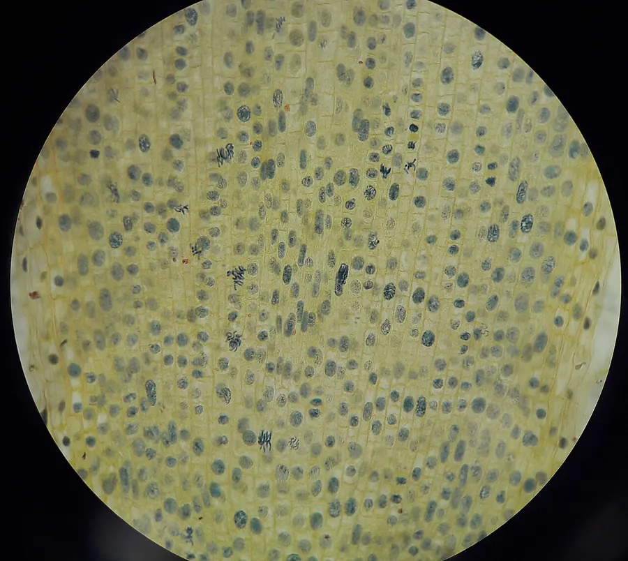

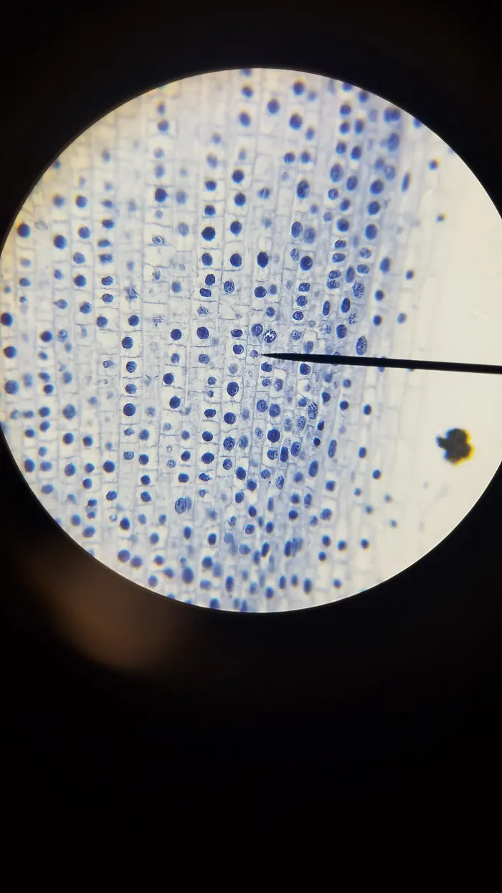
07Біомаркери і статистика
Препарати кодують «наосліп», переглядають ≥ 1000 клітин на препарат (5000–6000 на варіант) при 400× і 1000× з імерсією. Біомаркер — вимірюваний показник, що відображає дію чинника.
Мітотичний індекс: P, M, A, T — клітини в профазі, метафазі, анафазі й телофазі, I — в інтерфазі.
Фазовий індекс: різке зростання профазного — блок входу в мітоз; зростання метафазного на тлі падіння анафазного — статмокінез (зупинка поділу в метафазі через ушкодження веретена).
LCV (Limit Value for Cytotoxicity, поріг цитотоксичності): MI знизився до 50 % контролю — сублетальна цитотоксичність; нижче 22–25 % — летальний (мітоцидний) ефект. EC50 — концентрація, що вдвічі пригнічує ріст корінців (або MI) порівняно з контролем.
Індекс аберацій: у вузькому анафазо-телофазному тесті (Rank & Nielsen, 1994) знаменник — 100–500 переглянутих анафаз і телофаз.
Коефіцієнт зниження пошкоджень: CAA — мутаген, CAB — мутаген + протектор, CAC — вода.
Додатково вимірюють життєздатність клітин барвником Еванса синім (проникає лише в мертві клітини, оптична густина при 600 нм) та первинні розриви ДНК методом ДНК-комет (електрофорез окремих ядер: пошкоджена ДНК утворює «хвіст»). Достовірність різниці перевіряють дисперсійним аналізом (ANOVA) з критеріями Тьюкі чи Даннета, або критерієм χ² за p < 0,05.
Модель рахує MI, PI, частку аберацій, мікроядра, EC50 і χ² — і дає віртуальний підрахунок 5000 клітин.
Відкрити модель08Неорганічні чинники
Важкі метали
Метали не розкладаються, накопичуються в стінках і вакуолях та зв’язуються з групами –SH, –NH₂, –COOH білків і фосфатами ДНК. Ряд токсичності: Hg²⁺ > Cd²⁺ ≥ Pb²⁺ > As³⁺ / Cr⁶⁺ > Cu²⁺ > Ni²⁺ > Zn²⁺ > Mn²⁺ (Voica et al., 2024).
- Ртуть (HgCl₂) зв’язує –SH групи тубуліну: тотальний К-мітоз, липкість, руйнування веретена.
- Кадмій виснажує глутатіон і витісняє Zn²⁺ з «цинкових пальців» білків ремонту ДНК: мости, блукаючі хромосоми, ядерні бруньки.
- Свинець зв’язується з пектатами стінок (Wierzbicka, 1987), заміщує Ca²⁺ у кальмодуліні (білку-сенсорі кальцію, що регулює мікротрубочки), порушує мікротрубочки: К-мітоз, мости, фрагменти, мікроядра.
- Хром(VI) проникає через сульфатні канали; його відновлення до Cr(III) дає гідроксильні радикали і зшивки «ДНК–хром–білок».
- Мідь, цинк, нікель, марганець діють горметично (гормезис — стимуляція малими дозами й пригнічення великими): у слідах це кофактори ферментів, а понад поріг мідь запускає реакцію Фентона (утворення гідроксильного радикала з H₂O₂) — липкість і пікноз (ущільнення ядра загиблої клітини).

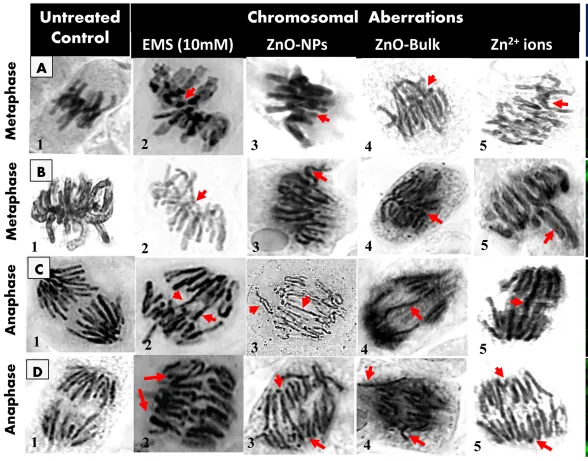
Наночастинки
Наночастинки (1–100 нм) проходять крізь пори клітинної стінки (5–20 нм) або розширюють їх, потрапляють у клітину ендоцитозом (поглинанням ділянкою мембрани, що впинається всередину) і діють і фізично, і як «троянський кінь» — поступово вивільняючи токсичні іони (Ag⁺, Zn²⁺, Cu²⁺). Іонне срібло (AgNO₃) знижує MI до 8,6 %, а срібло з полімерним покриттям Argovit™ навпаки стимулює поділ (MI 23 % проти 12,5 % у контролі). Наночастинки Se/ZnO дають липкі анафази з множинними мостами, TiO₂ — розриви, липкість, мультиполярні та відстаючі хромосоми, мікроядра (Pakrashi et al., 2014).

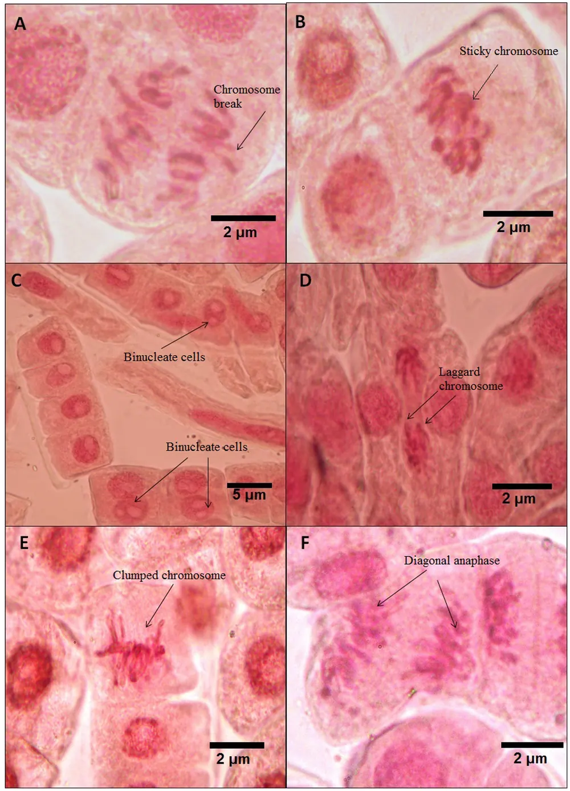

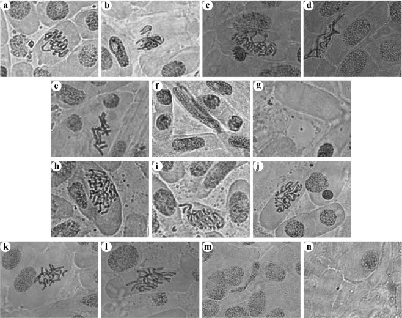
Солі, консерванти, засолення
Харчові консерванти (метабісульфіт калію, бензоат натрію, нітрит натрію) за перевищення доз і 48–72 год експозиції знижують MI і дають мости, К-мітоз, липкість. Засолення гальмує ріст корінців сильніше, ніж поділ.
| Чинник | Концентрації | MI і ріст | Типові аберації |
|---|---|---|---|
| HgCl₂ | 0,5–50 мг/л, 24–48 год | різке падіння нижче LCV | К-мітоз, липкість, руйнування веретена |
| Pb²⁺, Cd²⁺ | Pb 15–50, Cd 0,75–3 мг/кг ґрунту | MI ↓, поліфеноли ↓ до 56 % | мости, фрагменти, блукаючі, мікроядра |
| NaAsO₂ | 0,37 мг/мл, 1 год | MI 12,5 % | мікроядра 13,0 ‰ проти 1,3 ‰ |
| AgNO₃ / Argovit™ | еквівалентні дози Ag | 8,6 % / 23,0 % | мікроядра 4,0 ‰ / 2,6 ‰ |
| Se/ZnO-NPs | 5–40 ppm | дозозалежне ↓, затримка в профазі | липкі анафази, множинні мости |
Порівняйте Hg, Cd і Pb за однакової концентрації або подивіться гормезис міді.
Відкрити модель09Органічні чинники
Пестициди
Гліфосат (діюча речовина Раундапу) і особливо його комерційні суміші з поверхнево-активною речовиною POEA дають мости, К-мітоз, блукаючі хромосоми й мікроядра — його навіть використовують як позитивний контроль. Неонікотиноїд імідаклоприд — розриви, мости, мікроядра. Бензимідазольні й триазольні фунгіциди (тіабендазол, імазаліл) створені, щоб зупиняти поділ грибів, тож у цибулі вони — класичні анеугени: К-метафази, мультиполярні анафази, двоядерні клітини. Навіть інкапсуляція гербіцидів у наночастинки хітозану змінює їхню генотоксичність (Maruyama et al., 2016).
Ліки
Ліки потрапляють у стічні води в активній формі. Транквілізатор алпразолам (100–500 мкг/мл, 24 год) дає сильну обернену кореляцію з MI (r = −0,745) — за 500 мкг/мл поділ майже зупиняється (Nefic et al., 2013). Цитостатики доксорубіцин (вбудовується між парами основ ДНК і блокує топоізомеразу II) і мітоміцин С (зшиває ланцюги ДНК) дають мости й фрагменти; антиметаболіт метотрексат зупиняє клітини на переході G1/S.
Промислові полютанти
Поліциклічні ароматичні вуглеводні (бенз(а)пірен) у клітинах цибулі перетворюються на діол-епоксиди, що зв’язуються з гуаніном ДНК. Пластифікатор бісфенол А порушує веретено (К-мітоз, мультиполярні анафази), а разом з нанопластиком діє сильніше. Нанопластик з косметичних скрабів гальмує ріст корінців і спричиняє кільцеві хромосоми, К-мітоз і розриви (Gopinath et al., 2019).
Рослинні екстракти: і загроза, і захист
Екстракти лікарських рослин мають подвійну дію залежно від дози (Nicuță et al., 2025). Негативна: метанольний екстракт молочаю Euphorbia hirta знижує MI з 50,9 % до 40,3 / 37,9 / 29,9 % за 125 / 500 / 1000 мкг/мл (Ping et al., 2012); екстракт Inula viscosa дає фрагменти, липкість, мости, двоядерні клітини й апоптотичні тільця (Aşkin Çelik & Aslantürk, 2010); ефірні олії з монотерпенами — потенційні біогербіциди. Позитивна: настої звіробою, ромашки, деревію в терапевтичних дозах безпечні, а флавоноїдні екстракти подорожника, меліси, розмарину і зелений прополіс захищають хромосоми від MMS, H₂O₂, азиду натрію й свинцю (Roberto et al., 2016).
У моделі є екстракт Euphorbia hirta (негативна дія), ромашка і прополіс (захисна дія).
Відкрити модель10Біологічні чинники
Мікотоксини пліснявих грибів
Мікотоксини — отруйні вторинні метаболіти пліснявих грибів Aspergillus, Penicillium, Fusarium, Alternaria; ними забруднено до 85–99 % урожаю зернових і овочів, охратоксин А знаходили навіть у цибулинах.
- Афлатоксин B1 (A. flavus, A. parasiticus) — один з найсильніших природних канцерогенів. P450 і пероксидази цибулі перетворюють його на епоксид, що приєднується до гуаніну ДНК; наслідок — розриви, мости, К-мітоз, мікроядра, різке падіння MI (Reiss, 1974).
- Охратоксин А гальмує синтез білка (блокує фенілаланіл-тРНК-синтетазу): різке пригнічення росту корінців, мости, К-метафази, двоядерні клітини (Lerda et al., 2010).
- Патулін (Penicillium expansum) — «тіолова» веретенна отрута: К-мітоз, багатополюсні анафази.
- Трихотецени (дезоксиніваленол, Т-2 токсин Fusarium) блокують рибосоми — «риботоксичний стрес», блок G1/S і G2/M, пікноз; фумонізин B1 порушує обмін сфінголіпідів.

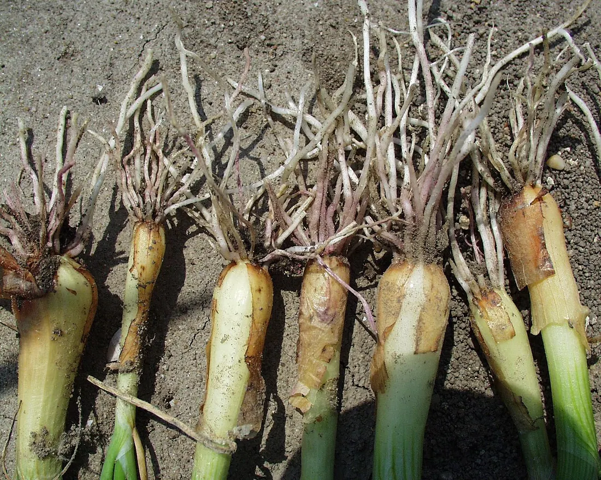

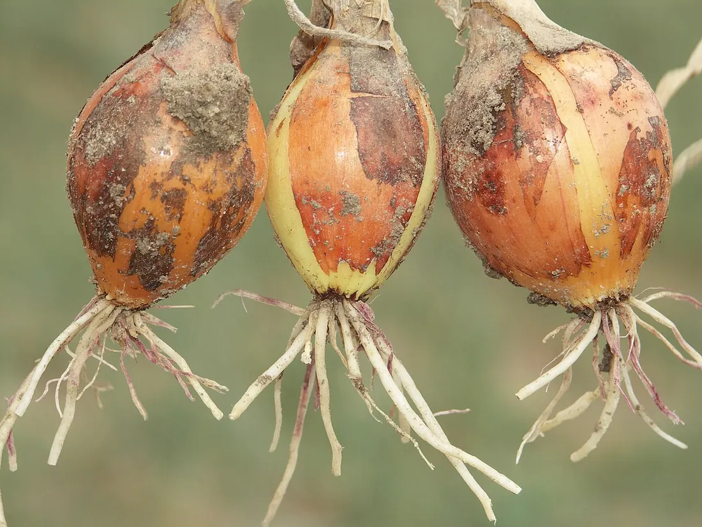
Ціанотоксини
«Цвітіння» водойм ціанобактеріями (Microcystis, Cylindrospermopsis) насичує воду токсинами. Мікроцистин-LR пригнічує протеїнфосфатази PP1 і PP2A (ферменти, що знімають фосфатні групи з білків поділу): хромосоми гіперконденсуються, утворюються зірчасті метафази, мультиполярні веретена, відстаючі хромосоми й мікроядра. Циліндроспермопсин зупиняє синтез білка і порушує препрофазну стрічку мікротрубочок (Máthé et al., 2013).
Парадокс біопестицидів
Мікробні інсектициди на основі Bacillus thuringiensis і спіносаду вважають безпечними, але в підвищених дозах (разом з технологічними добавками) вони знижують MI і дають липкість, К-мітоз, мости — як синтетичні пестициди. Тому їх теж треба тестувати перед внесенням.
Корисні мікроорганізми й протектори
- Дріжджі Saccharomyces cerevisiae — їхні β-глюкани (полісахариди клітинної стінки) та пребіотик інулін (запасний вуглевод самої цибулі) не токсичні й знижують аберації від MMS на 42,96–64,07 % (Mauro et al., 2014).
- Chlorella vulgaris і спіруліна хелатують Cu²⁺ хлорофіліном та полісахаридами, відновлюючи поділ і зменшуючи мости й мікроядра.
- Молочнокислі бактерії (Lactobacillus plantarum) під час ферментації вивільняють кверцетин і кемпферол — сильніший захист ДНК від окисного стресу.
- Гриби Trichoderma і ризобактерії PGPR (бактерії, що стимулюють ріст рослин) синтезують ауксини й гібереліни (фітогормони росту), прискорюють перехід G1 → S і ріст корінців, знешкоджують мікотоксини.
- Сама цибуля завдяки тіосульфінатам і кверцетину пригнічує патогенні бактерії та плісняву, а пробіотичні Lactobacillus і Bifidobacterium до її речовин стійкі.
| Біологічний агент | Діюча речовина | Вплив | Ефект у меристемі |
|---|---|---|---|
| Aspergillus flavus | афлатоксин B1 | різко негативний | аддукти з гуаніном, розриви, мости, мікроядра |
| A. ochraceus, Penicillium | охратоксин А, патулін | негативний | блок синтезу білка, –SH тубуліну; К-мітоз, мости |
| Fusarium | DON, Т-2, зеараленон | негативний | блок рибосом, пікноз, мости, відстаючі хромосоми |
| Microcystis, Cylindrospermopsis | мікроцистин-LR, циліндроспермопсин | негативний | гіперфосфорилювання гістону H3, мультиполярні анафази |
| B. thuringiensis, спіносад | Cry/Cyt-токсини | умовно негативний | у великих дозах — липкість, К-мітоз, мости |
| S. cerevisiae, інулін | β-глюкан | позитивний | %DR 42,96–64,07 % від MMS |
| Chlorella vulgaris | хлорофілін, полісахариди | позитивний | хелатування металів, нормалізація MI |
| Trichoderma, PGPR, Lactobacillus | ауксини, флавоноїди | позитивний | стимуляція G1/S і росту, ↑ SOD/CAT |
Поєднайте афлатоксин B1 з метаболітами Trichoderma або мідь з хлорелою і порівняйте з самим токсикантом.
Відкрити модель11Висновки й перспективи
- Шістнадцять великих хромосом, швидкий цикл і висока частка поділів роблять Allium cepa зручною моделлю, щоб розрізнити кластогенні (розриви, мости, кільця, дрібні мікроядра) й анеугенні (К-мітоз, липкість, відстаючі хромосоми, мультиполярні анафази, великі мікроядра) пошкодження.
- Анафаза — природний біомеханічний детектор: натяг веретена «проявляє» приховані пошкодження, а телофаза показує їхні наслідки — мікроядра і двоядерні клітини.
- Тест чутливий до металів, наночастинок, пестицидів, ліків, промислових полютантів і біологічних токсинів, а схеми пре-, симультанної та пост-обробки перетворюють його на інструмент кількісної оцінки антимутагенів.
- Майбутнє методу — автоматичне розпізнавання фаз і аберацій згортковими нейромережами (CNN) та поєднання з методом ДНК-комет, транскриптомікою й метаболомікою.
12Словник термінів
Структурна або числова зміна хромосом.
Чинник, що змінює кількість хромосом, порушуючи веретено поділу.
Чинник, що рве хромосоми й ДНК.
Частка клітин у мітозі серед усіх клітин меристеми, %.
Частка кожної фази серед клітин, що діляться.
Маленьке окреме ядро з фрагмента або цілої хромосоми.
Зупинка поділу в метафазі через руйнування веретена.
Твірна тканина, клітини якої постійно діляться.
Концентрація, що вдвічі зменшує ефект (ріст, MI) порівняно з контролем.
Поріг цитотоксичності: MI знизився до 50 % контролю.
Відсоток, на який протектор знижує пошкодження від мутагену.
Речовина, що інактивує мутаген до того, як він досягне ДНК.
Речовина, що стимулює ремонт уже пошкодженої ДНК.
Стимуляція малими дозами й пригнічення великими.
Речовина, що стає мутагеном лише після перетворення в клітині.
Система мікротрубочок, що будує клітинну пластинку.
13Контрольні питання
Чому для тесту використовують саме меристему кінчика корінця?
Назвіть три рівні відповіді, які реєструє Allium cepa тест.
Чим кластогенна дія відрізняється від анеугенної?
Чому анафазо-телофазний тест не потребує колхіцину?
Як утворюється анафазний міст?
Що показує зростання метафазного індексу при падінні анафазного?
Чому цибуля, на відміну від тесту Еймса, виявляє промутагени без фракції S9?
Чому дистильована вода — не найкращий негативний контроль?
Як за схемою обробки відрізнити десмутаген від біоантимутагену?
Чому мідь може і стимулювати, і пригнічувати поділ?
14Література
- Ahmed, B., Dwivedi, S., Abdin, M. Z., Azam, A., Al-Shaeri, M., Khan, M. S., Saquib, Q., Al-Khedhairy, A. A., & Musarrat, J. (2017). Mitochondrial and chromosomal damage induced by oxidative stress in Zn²⁺ ions, ZnO-bulk and ZnO-NPs treated Allium cepa roots. Scientific Reports, 7, 40685. https://doi.org/10.1038/srep40685
- Aşkin Çelik, T., & Aslantürk, Ö. S. (2010). Evaluation of cytotoxicity and genotoxicity of Inula viscosa leaf extracts with Allium test. Journal of Biomedicine and Biotechnology, 2010, 189252. https://doi.org/10.1155/2010/189252
- Bonciu, E., Firbas, P., Fontanetti, C. S., Wusheng, J., Karaismailoğlu, M. C., Liu, D., et al. (2018). An evaluation for the standardization of the Allium cepa test as cytotoxicity and genotoxicity assay. Caryologia, 71(3), 191–209. https://doi.org/10.1080/00087114.2018.1503496
- Chang, S. N., Dey, D. K., Oh, S. T., Kong, W. H., Cho, K. H., Al-Olayan, E. M., Hwang, B. S., Kang, S. C., & Park, J. G. (2020). Phorbol 12-myristate 13-acetate induced toxicity study and the role of tangeretin in abrogating HIF-1α-NF-κB crosstalk in vitro and in vivo. International Journal of Molecular Sciences, 21(23), 9261. https://doi.org/10.3390/ijms21239261
- Fiskesjö, G. (1985). The Allium test as a standard in environmental monitoring. Hereditas, 102(1), 99–112.
- Gopinath, P. M., Saranya, V., Vijayakumar, S., Mythili Meera, M., Ruprekha, S., Kunal, R., Pranay, A., Thomas, J., Mukherjee, A., & Chandrasekaran, N. (2019). Assessment on interactive prospectives of nanoplastics with plasma proteins and the toxicological impacts of virgin, coronated and environmentally released-nanoplastics. Scientific Reports, 9, 8860. https://doi.org/10.1038/s41598-019-45139-6
- Leme, D. M., & Marin-Morales, M. A. (2009). Allium cepa test in environmental monitoring: A review on its application. Mutation Research / Reviews in Mutation Research, 682(1), 71–81.
- Maruyama, C. R., Guilger, M., Pascoli, M., Bileshy-José, N., Abhilash, P. C., Fraceto, L. F., & de Lima, R. (2016). Nanoparticles based on chitosan as carriers for the combined herbicides imazapic and imazapyr. Scientific Reports, 6, 19768. https://doi.org/10.1038/srep19768
- Mauro, M. O., Pesarini, J. R., Marin-Morales, M. A., Monreal, M. T. F. D., Monreal, A. C. D., Mantovani, M. S., & Oliveira, R. J. (2014). Evaluation of the antimutagenic activity and mode of action of the fructooligosaccharide inulin in the meristematic cells of Allium cepa culture. Genetics and Molecular Research, 13(3), 4808–4819.
- Máthé, C., M-Hamvas, M., & Vasas, G. (2013). Microcystin-LR and cylindrospermopsin induced alterations in chromatin organization of plant cells. Marine Drugs, 11(10), 3689–3717. https://doi.org/10.3390/md11103689
- Nefic, H., Musanovic, J., Metovic, A., & Kurteshi, K. (2013). Chromosomal and nuclear alterations in root tip cells of Allium cepa L. induced by alprazolam. Medical Archives, 67(6), 388–392.
- Nicuță, D., Grosu, L., Patriciu, O.-I., Voicu, R.-E., & Alexa, I.-C. (2025). The Allium cepa model: A review of its application as a cytogenetic tool for evaluating the biosafety potential of plant extracts. Methods and Protocols, 8(4), 88. https://doi.org/10.3390/mps8040088
- Pakrashi, S., Jain, N., Dalai, S., Jayakumar, J., Chandrasekaran, P. T., Raichur, A. M., Chandrasekaran, N., & Mukherjee, A. (2014). In vivo genotoxicity assessment of titanium dioxide nanoparticles by Allium cepa root tip assay at high exposure concentrations. PLOS ONE, 9(2), e87789. https://doi.org/10.1371/journal.pone.0087789
- Ping, K. Y., Darah, I., Yusuf, U. K., Yeng, C., & Sasidharan, S. (2012). Genotoxicity of Euphorbia hirta: An Allium cepa assay. Molecules, 17(7), 7782–7791. https://doi.org/10.3390/molecules17077782
- Rank, J., & Nielsen, M. H. (1994). Evaluation of the Allium anaphase–telophase test in relation to genotoxicity screening of industrial wastewater. Mutation Research, 312(1), 17–24.
- Reiss, J. (1974). Mycotoxin poisoning of Allium cepa root tips. II. Reduction of mitotic index and formation of chromosomal aberrations by aflatoxin B1, rubratoxin B and patulin. Cytologia, 39(4), 703–708.
- Roberto, M. M., Jamal, C. M., Malaspina, O., & Marin-Morales, M. A. (2016). Antigenotoxicity and antimutagenicity of ethanolic extracts of Brazilian green propolis and its main botanical source determined by the Allium cepa test system. Genetics and Molecular Biology, 39(2), 257–269.
- Saensouk, S., & Saensouk, P. (2021). Karyotype analysis of three species of Allium (Amaryllidaceae) from Thailand. Biodiversitas, 22(9), 3858–3864.
- Torres-Bugarín, O., Gómez-Ferreyra, I., Contreras-Dueñas, M., Ramos-Ibarra, M. L., Bello-Bedoy, R., Sánchez-González, A., et al. (2026). The Allium cepa assay as a versatile tool for genotoxicity and cytotoxicity: Methods, applications, and comparative insight. Applied Biosciences, 5(1), 9. https://www.mdpi.com/2813-0464/5/1/9
- Voica, D., Kovacs, Z. I., Rusu, T., et al. (2024). Responses of the Allium cepa L. to heavy metals from contaminated soil. Plants, 13(20), 2913. https://doi.org/10.3390/plants13202913
Фото мікропрепаратів — з відкритих наукових статей (ліцензія CC BY) і Wikimedia Commons (CC BY, CC BY-SA, CC0); автор і ліцензія — під кожним фото.